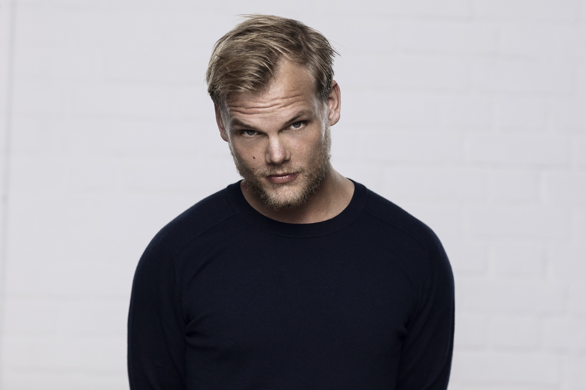

He was a Swedish DJ, remixer, record producer, musician, and songwriter who specialized in audio programming, remixing, and record producing.

"El escenario no es para mí. Siempre fueron las otras cosas que lo rodeaban lo que nunca me sentí naturalmente.
Todas las otras partes de ser un artista. Soy más una persona introvertida en general.
Siempre fue muy difícil para mí. Tomé demasiada energía negativa, creo."
Here's a time line of Tim Bergling's life:
1989 - Tim Bergling was born in Stockholm on 8 September 1989, the son of
Klas Bergling and actress Anki Lidén. He started mixing in his bedroom at the age of eight.
He had three siblings: David Bergling, Linda Sterner, and Anton Körberg. Inspired by his brother,
who was also a DJ.
2007 - He began making music at the age of 16. In May 2007, Bergling signed on with the Dejfitts Plays label.
He was a member of the Laidback Luke Forums, where he refined his craft and, at times, demonstrated his distinct
deep house style.
2009 - Bergling was a prolific producer and was releasing music incredibly quickly.
His remixes during this period were "Sound of Now", "Muja", "Ryu" and "Even". Bergling explained that the name
Avicii means "the lowest level of Buddhist hell" and he chose the moniker because his real name was already
used upon creating his Myspace page.
2010 - Bergling released the hit song "Seek Bromance", which reached the top 20 in several countries,
including Belgium, France, the Netherlands, United Kingdom, and Sweden. He also remixed Nadia Ali's
classic single "Rapture" for her album Queen of Clubs Trilogy: Onyx Edition. In October 2010, Bergling signed with
the European A&R team with EMI Music Publishing.
2011 - Bergling's track "Fade into Darkness" was sampled by Leona Lewis on her single "Collide".
The sampling was not accredited and led to controversy as Bergling attempted to block the single's release.
The matter was resolved out of court, with "Collide" being made a joint release between Lewis and Bergling.
In October 2011, Bergling released "Levels", which launched him into the mainstream. "Levels" reached
the top ten in Austria, Belgium, Bosnia, Croatia, Denmark, Finland, Germany, Greece,
Ireland, Italy, the Netherlands, Slovenia and the United Kingdom, whilst topping the charts
in Hungary, Norway and Sweden.
2012 - His collaboration track "Sunshine" with David Guetta was nominated for a Grammy award under the
category for Best Dance Recording. On 23 March 2012, Bergling's unsigned single "Last Dance" was previewed
on Pete Tong's show on BBC Radio 1. The song was later released on 27 August 2012. At Ultra Music Festival
2012 in Miami, he premiered two tracks, "Girl Gone Wild" (Avicii's UMF Remix) with Madonna and "Superlove"
with Lenny Kravitz. Bergling's UMF Remix of "Girl Gone Wild" was released on 20 April 2012, and "Superlove"
with Kravitz was released on 29 May 2012. After reaching two million followers on Facebook, Bergling released
a new song titled "Two Million". It was put out as a free download on his official SoundCloud page. On 27 April
2012, Bergling released "Silhouettes". The song featured vocals from Salem Al Fakir and peaked at number 5
on the UK Dance charts and number 4 on the Billboard Hot Dance Club Songs.
2013 - On June, the world premiere of Bergling's new single, "Wake Me Up", was previewed by Pete Tong
on BBC Radio 1, featuring vocals from Aloe Blacc. The song was later released on iTunes and radio on 25
June 2013. It is the first single from Bergling's album True, which was released on 16 September 2013. "Wake Me Up"
was number 1 on the Spotify Global Chart and Bergling was at 2 in most streamed artist worldwide. "Wake Me Up"
later went on to set a then record of 14 weeks as the number one hit on Billboard's Dance/Electronic Songs list.
The Official Charts Company announced on 21 July that "Wake Me Up" had become the UK's fastest selling single of
2013
2014 - In July 2014, Bergling released his single "Lay Me Down". He also produced and collaborated with
Chris Martin from Coldplay, co-writing and co-producing the track "A Sky Full of Stars" from the band's sixth
studio album Ghost Stories, released on 19 May 2014. He also played and recorded the piano parts on the track.
"A Sky Full of Stars" was released on 3 May as the second single from Ghost Stories. "Lovers on the Sun",
a track Bergling co-produced with David Guetta, was released on 30 June 2014. Bergling also worked with
Wyclef Jean on a single titled "Divine Sorrow" for the Haitian singer's upcoming album Clefication.
2015 - On 3 July 2015, Bergling previewed two tracks from his album Stories on episode 37 of his LE7ELS
podcast: "Broken Arrows" featuring Zac Brown Band and "Can’t Catch Me" featuring Wyclef Jean and Matisyahu.
He also played a full version of his track "Heaven" and said that he was doing another track with
Chris Martin on vocals called "True Believer". Later, Bergling said that he is also singing on that track.
On 18 July 2015, it was announced by Bergling that he had finally finished production on Stories after
2 years of work.
2016 - On 29 March, Bergling announced on Facebook that he would be retiring from performing live
and touring in 2016.
2017 - In June 2017, British singer Rita Ora debuted a semi-acoustic version of "Lonely Together" at a
private event at Annabel's in London. "Lonely Together" was later the second single from Avīci (01).
From 13 July to 2 August, Bergling shared one-minute snippets on Instagram, captioned "New music coming
very very (very) soon!", with track titles as hashtags. Bergling uploaded teasers of each track
from the EP online upon release.
2018 - Bergling died on 20 April near Muscat at the age of 28. No cause of death was immediately given.
On 21 April, the Omani police stated that there was "no criminal suspicion" or evidence of foul play in
Bergling's death.